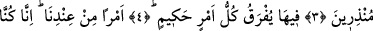

KUŞKUSUZ BİZ UYARICIYIZ
Bismillâhirrahmânirrahîm
1. Hâ Mîm.
2. Apaçık olan Kitab’a andolsun ki,
3. Biz onu (Kur’ân’ı) mübârek bir gecede indirdik. Çünkü biz uyarıcıyız.
4- Her hikmetli emir, o gecede ayırd edilir;
5. Katımızdan bir emirle… Çünkü biz, peygamberler göndermekteyiz.
6. Rabbinin bir rahmeti olarak. O işitendir, bilendir.
7. Eğer kesin olarak inanıyorsanız (bilin ki Allah), göklerin, yerin ve ikisi
arasında bulunanların Rabbidir.
8. O’ndan başka ilâh yoktur. (Her şeyi O) diriltir ve öldürür. Sizin de Rabbiniz,
önceki atalarınızın da Rabbidir.
9. Fakat onlar, şüphe içinde oynuyorlar.
10. Göğün, açık bir duman getireceği günü gözetle.
11. (Duman) İnsanları sarar. Bu, acı bir azâbdır.
12. “Rabbimiz, bizden azâbı kaldır, çünkü biz artık inanıyoruz” derler.
Rahman ve Rahim olan Allâh’ın adıyla
“Hâ Mîm” hakkı için. “Hâ Mîm”, bu sûreyi yahut Kur’ân’ın tamamını ifâde eder.